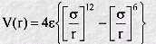
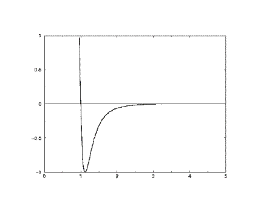
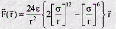

Lennard-Jones Potential
Lennard-Jones Potential
The Lennard-Jones function is a very famous empirical function in molecular dynamics. It is an approximate function which describes the energy of interaction between two rare gas atoms as a function of the distance between their centres. As such it is a model for all interatomic pair potentials. Its simplicity and accuracy make it highly suitable for molecular dynamics simulations. The form of the function (V(r)) is given by:

In which r is the interatomic separation, epsilon is the energy constant (or well depth) and sigma is effectively the diameter of one of the atoms. A plot of this function shows a number of important characteristics:

At short range (small r) the potential energy is very large and positive, revealing that this is a very unfavourable arrangement of the atoms (it indicates that the two atoms are strongly overlapping). At long range the potential energy is small and negative. This indicates that at this range the pair of atoms experiences a stabilising influence. (In fact this corresponds to the London dispersion energy, caused by a subtle form of electrical attraction known as the instantaneous dipole-dipole interaction). At a separation slightly greater than sigma, the energy is at a minimum. This where the atom pair is stable, and will be content to remain in this position until some external influence disturbs them. The basic shape of this curve is common to almost all empirical potentials and captures the essentials of interatomic (nonbonding) forces. This type of potential was anticipated by van der Waals in his famous gas equation.
We can use the potential energy function to calculate the force between the atoms. Mathematically this is given by the negative of the first derivative of the function - in other words the negative of the slope of the graph at all points. Such a derivation shows that when the atoms are close the force is repulsive, at long range it is attractive, and at the energy minimum, the force is zero - as expected! The mathematical form of the force is as follows:

Note that the force F is a vector, with components in three directions: X,Y,Z. This is quite different from the potential function, which is a scalar and has only one value for each distance r. This is one reason why it is more convenient to work with potential functions rather than force laws.
The underlying potential energy function in the program Democritus is a variant of the Lennard-Jones potential called the Shifted force potential, which has special advantages in simulations where the potential energy function and associated forces are truncated at some prescribed interatomic separation (i.e. a spherical cut off is applied).